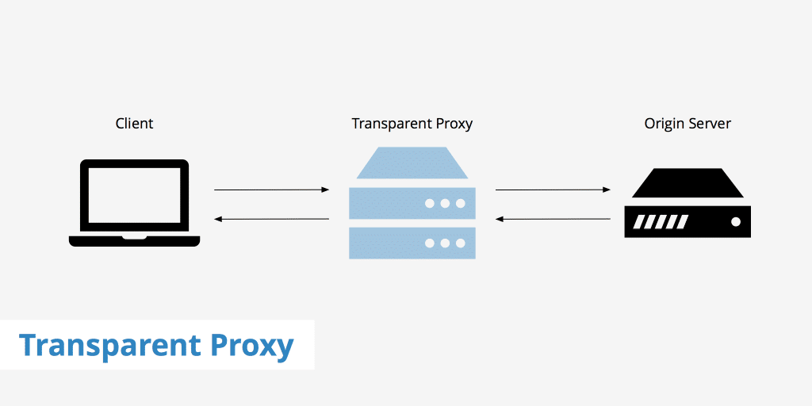
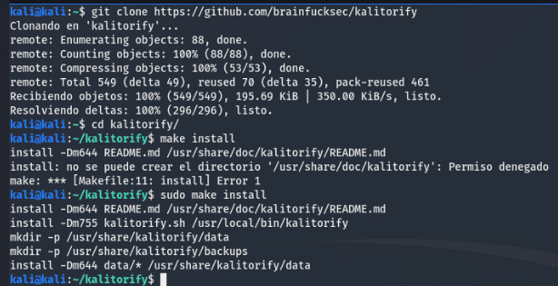
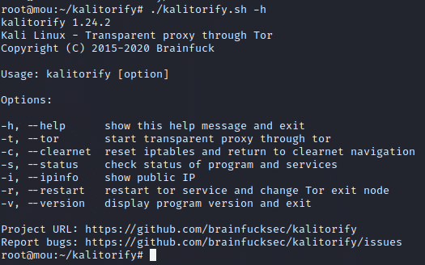
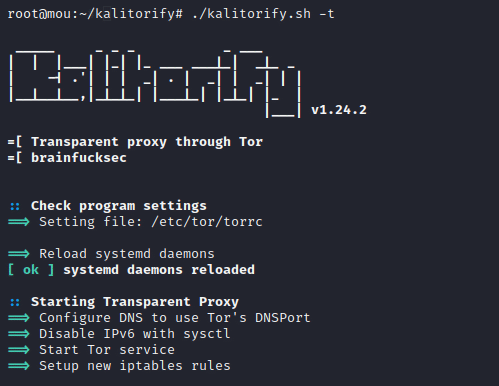
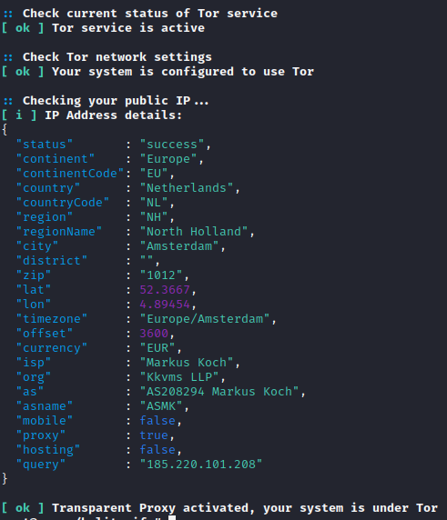
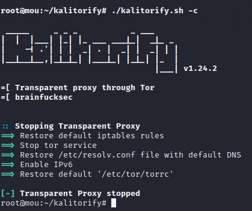
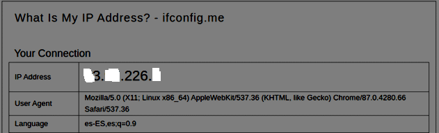
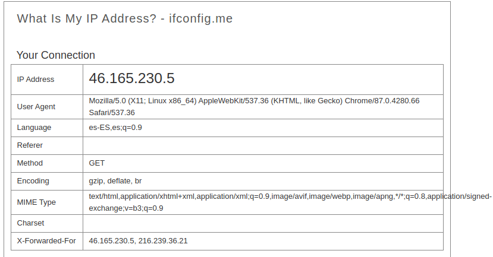

Actualmente navegar por internet tiene sus riesgos, puesto que nuestra información puede ser accedida por cualquiera con conocimientos informáticos. Por ello los usuarios cada día demandan más privacidad y seguridad en Internet. Para llevar a cabo esto tenemos muchas herramientas, pero hoy nos vamos a centrar en una herramienta para Kali Linux que nos va a ofrecer un alto nivel de anonimato a la hora de navegar.
¿Qué es Kalitorify?
Kalitorify es un script de Shell para Kali Linux que usa la configuración de iptables para crear un proxy transparente a través de la red Tor. Con Kalitorify podemos enrutar todo el tráfico de nuestro ordenador a través de la red Tor.

Un proxy transparente es un sistema intermediario que se encuentra entre un usuario y un proveedor de contenido. Cuando un usuario realiza una solicitud a un servidor web, el proxy transparente intercepta la solicitud para realizar varias acciones, incluido el almacenamiento en caché, la redirección y la autenticación. Con esto configurado, ninguna aplicación podrá revelar su dirección IP conectándose directamente.
Instalando Kalitorify
Para empezar, tenemos que tener el sistema Kali Linux totalmente actualizado. Lo realizamos con los siguientes comandos:
sudo apt-get update && sudo apt-get dist-upgrade -yDespués debemos instalar el servicio Tor necesario para que nuestra aplicación funcione:
sudo apt-get install -y tor curl
Una vez realizados los pasos previos, procedemos a clonar la app del repositorio oficial de GitHub:
git clone https://github.com/brainfucksec/kalitorifyEs momento de cambiarnos al directorio de Kalitorify y completar la instalación:
cd kalitorify/
sudo make install
Para finalizar, vamos a realizar un reboot del sistema.
Utilizando Kalitorify
Una vez iniciado de nuevo el sistema, procedemos a arrancar nuestra app:
cd kalitorify/
./kalitorify.sh --[opcion]Opciones disponibles
Antes de empezar con el uso de Kalitorify, veamos las opciones que tiene y para qué sirve cada una. Las podemos visualizar con el siguiente comando:
./kalitorify.sh -h
Para poner en marcha la app utilizaremos la opción -t:

Ahora mismo todo el tráfico de nuestra red estará enrutándose a través de la red Tor, pudiendo ver en la imagen anterior la IP pública que se nos ha asignado y la localización desde la cual estaríamos saliendo a la red — una localización e IP totalmente distintas a la nuestra.
En caso de que queramos detener la app, lo haremos con la opción -c:
./kalitorify -cEjemplo
Veamos primero nuestra IP sin Kalitorify:

Veamos ahora nuestra nueva IP con Kalitorify:


Conclusión
En definitiva, esta simple aplicación nos ofrece enrutar todo nuestro tráfico a través de la red Tor y sin necesidad de descargar ningún navegador como Tor Browser. Nos ofrece anonimato, nunca al 100% pues es casi imposible, pero ayuda muchísimo. Aplicando lo visto en este artículo junto a un cambio de dirección MAC y hostname, podremos hacer que nuestro equipo y nuestras búsquedas sean casi imposibles de rastrear.